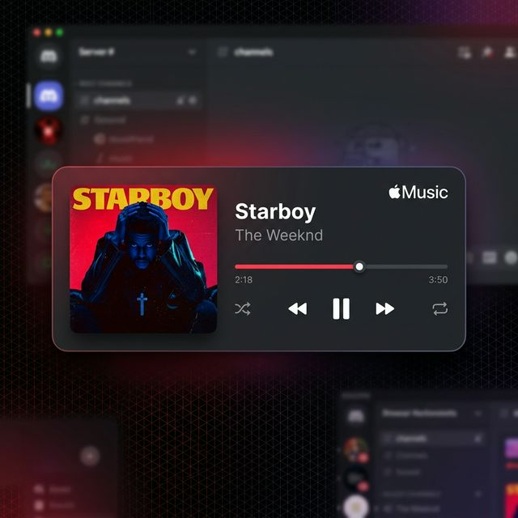

Elevate your Discord Presence.
Showcase your Apple Music playback with stunning metadata, high-res artwork, and real-time synchronization across all platforms.

Cross-Platform
Native support for macOS, Windows, and Linux. Optimized for efficiency and accurate track detection.
Web Integration
Specialized detection for web-based Apple Music players on Chromium, ensuring you're always in sync.
Dynamic Artwork
Automatic retrieval of high-resolution cover art via iTunes API with reliable fallback mechanisms.
Built with Bun
Leveraging the Bun runtime for minimal overhead, ultra-fast startup, and responsive RPC updates.
Quick Setup
# Install dependencies
bun install
# Start the application
bun start